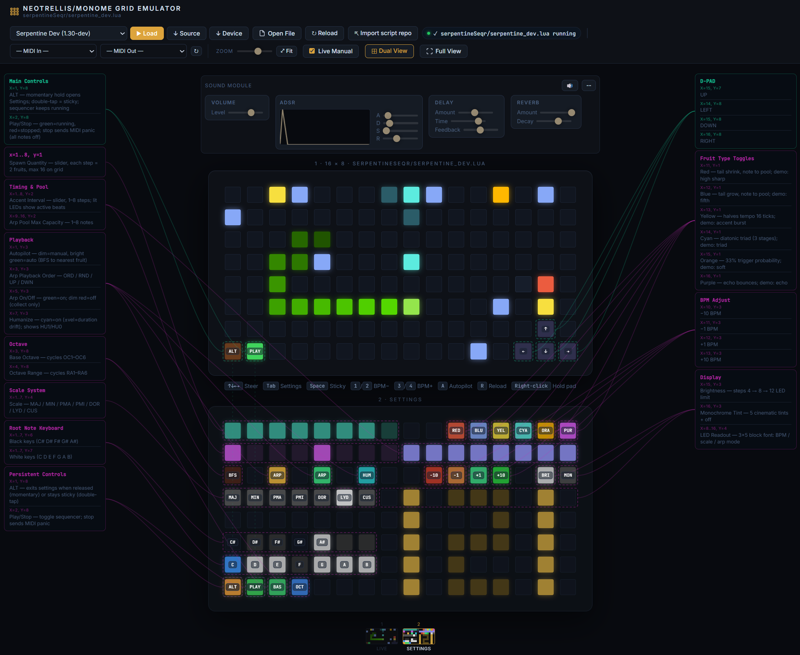

Universal Monome Grid Lua Emulator — Walkthrough¶
A browser-based emulator that runs real .lua scripts natively using the
Fengari Lua 5.3 runtime, with a Node.js hot-reload dev
server. Designed as a universal development tool for any Monome-compatible grid
script.
Screenshot¶

*The emulator running serpentine_dev.lua — snake in motion, docs panel populated
from LDoc comments
Project Structure¶
emulator/
├── emulator.html ← Main UI (grid, script browser, docs/state/console panel)
├── serve.js ← Node.js dev server + WebSocket hot-reload broadcaster
├── package.json ← Single dependency: ws
├── docs/
│ └── walkthrough.md ← This file
├── scripts/
│ ├── manifest.json ← Script registry (name, file, version, description)
│ ├── serpentine_dev.lua ← Live dev copy (synced from parent folder)
│ └── serpentine.lua ← Stable reference copy
└── engine/
├── grid-api.js ← Hardware shim layer
├── lua-loader.js ← Fengari execution bridge + hot-reload WS client
└── doc-extractor.js ← LDoc-style comment parser
Quick Start¶
# From inside the emulator/ directory:
node serve.js
Open http://localhost:3141/ in any browser.
The File Picker button works even without the server — you can drag any
.luafile from disk directly.
Architecture¶
1. Script Loading¶
emulator.html fetches scripts/manifest.json on startup and populates the
dropdown selector. Clicking ▶ Load fetches the .lua source over HTTP and
passes it to the Lua runtime. The Open File button accepts any local .lua
without requiring the server.
2. Fengari Execution (engine/lua-loader.js)¶
Source (.lua)
│
▼
luaL_newstate() ← fresh Lua VM per script load
luaL_openlibs() ← math, string, table, etc.
│
├─ Inject globals ← grid_led, midi_note_on, metro.init, wrap, get_time…
│
luaL_loadbuffer() ← compile Lua source
lua_pcall() ← execute
│
└─ Capture event_grid global → wired to pad clicks
All MonomeAPI functions are injected as C-closures that delegate to the JS
MonomeAPI class.
Fengari API note: In
fengari-web@0.1.4,to_luastringis a top-level export onwindow.fengari, not nested insidefengari.lua. Always destructure it as:js const { lua, lualib, lauxlib, to_luastring } = window.fengari;
3. Grid Rendering (engine/grid-api.js)¶
| Lua call | JS result |
|---|---|
grid_led(x, y, lum) |
writes mono {r,g,b} to frame buffer, using current global tint |
grid_led_rgb(x, y, r, g, b) |
writes RGB to frame buffer |
grid_color(r, g, b) |
sets a global tint for subsequent grid_led() / grid_led_all() output |
grid_led_all(lum) |
fills entire frame buffer, respecting current global tint |
grid_refresh() |
flushes buffer → updates .pad DOM elements |
grid_color_intensity(val) |
sets master brightness multiplier |
Every grid_refresh() call applies the master brightness and sets
background + box-shadow CSS on each pad for the glow effect.
grid_color() is a global tint helper; it does not set per-pixel color. For true
per-pixel RGB output, use grid_led_rgb(). grid_color_intensity() adjusts the
final brightness of rendered output.
4. Hot-Reload (serve.js + lua-loader.js)¶
Edit .lua file on disk
│
fs.watch() ← serve.js watches scripts/
│
WebSocket broadcast ← { type: "file_changed", name: "..." }
│
browser receives message ← lua-loader.js
│
re-fetch + re-execute ← ~150ms turnaround
The WebSocket reconnects automatically if the server restarts.
5. Documentation Extraction (engine/doc-extractor.js)¶
The doc extractor scans Lua source for LDoc-style comments and populates the Docs and State sidepanel tabs automatically after each script load.
Recognised patterns:
-- scriptname: My Script ← populates script meta card
-- v1.2.3
-- @author: yourname
-- llllllll.co/t/thread-link
-- @section Grid Layout ← creates a named section in the Docs tab
-- x=1..8, y=1: Some control ← control map entry (location + description)
-- x=1, y=8: ALT toggle
--- Short description. ← function doc (triple-dash)
-- @tparam number x Column (1-based)
-- @treturn boolean Success flag
local function my_fn(x) ... end
local bpm = 120 ← captured in the State tab (simple scalars)
Keyboard Shortcuts¶
| Key | Grid equivalent | Action |
|---|---|---|
↑ ↓ ← → |
D-PAD (x15-16, y7-8) | Steer snake |
Tab |
ALT (x1, y8) | Open settings (hold) |
Space |
ALT (x1, y8) | Sticky settings toggle |
1 / 2 |
x10-11, y3 | BPM −10 / −1 |
3 / 4 |
x12-13, y3 | BPM +1 / +10 |
A |
x1, y3 | Cycle autopilot: NON → SEM → AUT |
R |
— | Reload current script |
Adding a New Script¶
- Copy your
.luafile intoemulator/scripts/ - Add an entry to
emulator/scripts/manifest.json:
{
"name": "My Script",
"file": "my_script.lua",
"version": "1.0.0",
"description": "What it does"
}
- The dropdown will include it on next page load (or reload).
LDoc Annotation Cheatsheet¶
Paste this header at the top of any script to enable full doc extraction:
-- scriptname: Script Name
-- v1.0.0
-- @author: yourname
-- llllllll.co/t/thread
-- A one-line description shown under the title.
-- @section Controls
-- x=1..8, y=1: Main slider — does X
-- x=1, y=8: ALT toggle — opens settings
-- @section Internal
--- Initialise the game state.
-- @tparam number seed Random seed
local function init(seed) ... end
MIDI Output¶
Connect a MIDI output via the bottom bar dropdown. The emulator sends:
- 0x90 Note On (from midi_note_on)
- 0x80 Note Off (from midi_note_off)
Web Audio synthesis runs as a fallback whenever no MIDI output is selected, using a triangle-wave oscillator with configurable volume, attack, and release (sliders below the grid).
Extending the Hardware Shim¶
To add a new API function for a Lua script to call, edit engine/grid-api.js
to add the JS-side implementation, then register it in engine/lua-loader.js
using setGlobal:
// In lua-loader.js _execute(), after other setGlobal calls:
setGlobal('my_new_fn', (L2) => {
const val = getInt(L2, 1); // first Lua argument
api.my_new_fn(val);
return 0; // number of return values pushed
});
// In grid-api.js:
my_new_fn(val) {
// JS implementation
}